I have always enjoyed timelines in Tableau. You can do a straightforward linear timeline (more commonly known as a line graph). You can do a curvy timeline like the one featured by Ken Flerlage here.
In reviewing my output from 2024, I went a step further. You don’t read it straight from left to right, or even along each row. Rather, it meanders its way through the page. Much like my year had ups and downs, I wanted to create a timeline that gave that idea. Every year in our lives feels like it is going round in circles at times – it’s certainly not as straightforward as a path from A to B!
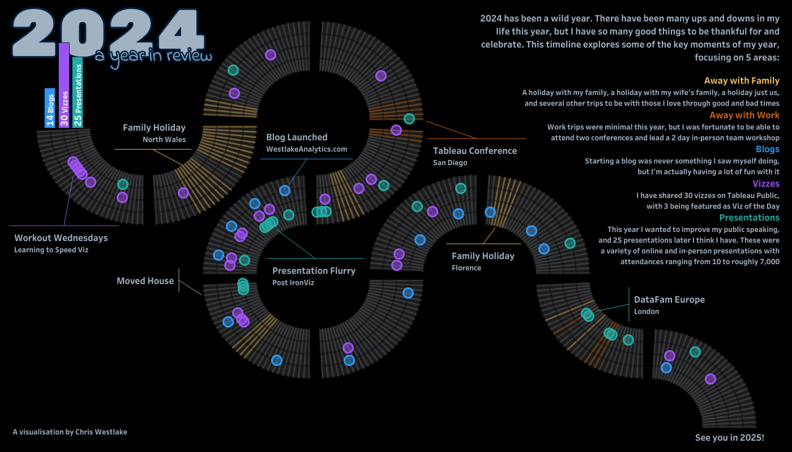
This visualisation was recognised as Tableau’s Viz of the Day on 30th December 2024. Let’s have a look at how I created the timeline element of it.
Sketch it out
When working on something like this, it’s important to know what your end goal is. Step one for me was to open Figma and work out where I wanted my curves to go. The thing I love about Figma is how easy it is to move objects around. This took some playing around, but I landed on the image below.
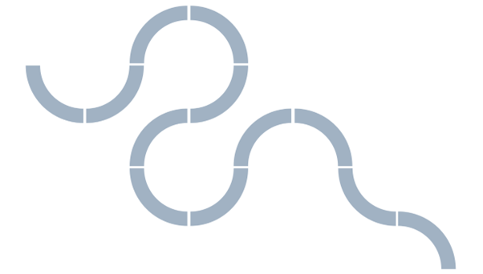
The Data Set
I formatted the data for this visualisation in Excel. It features a row for each day of the year, and columns detailing the information that I wanted to track. I also decided to hardcode in here the angle that each day should sit at on a circle.
I knew from the sketch that each month should span over 90 degrees. Dividing this by the number of days in each month gave me the space that each day could occupy within the month.
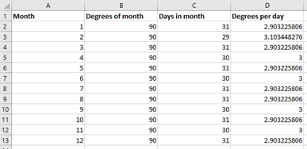
I then applied this to the main data table so that each day of the year would have a set degree point at which it should appear. This was done by taking the month value we found above and multiplying it by the Day of Month column for each day.
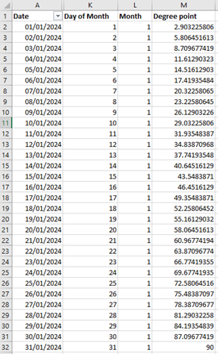
I used one further sheet on the data source to densify the data for the backdrop that we add to the visualisation in Tableau. This is simply one column (T) with values 1 and 2.
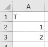
In Tableau, bring in the main data sheet and the densification file and join them on a custom calculation of ‘1’.
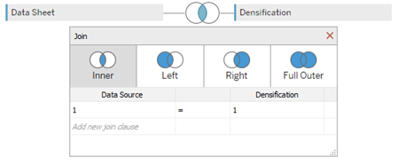
Plotting the Path
This is where the fun comes in. Remember the trigonometry you learnt in high school maths? It was useful after all! If you are getting nervous at that sentence, the is no need to panic. It’s all quite straightforward and I’ll walk you through it.
We want to plot a point for each day of the year in a circular pattern. Let’s start with January, and we can worry about the other months later. According to the sketching that we did earlier, we can see that for January we want a quarter circle from “9 o’clock” to “6 o’clock”. On this curve we will plot a point for each of the 31 days in the month, using trigonometry to plot the points.
We will use the below calculations to find x and y coordinates, and then stitch them together using the MAKEPOINT function in Tableau.
X = [Radius] * SIN([Angle])
Y = [Radius] * COS([Angle])
I always use a parameter for the radius value so that it can be changed easily. In this dashboard I settled on a value of 6, but it doesn’t change much to the overall process. For January, we have the below calculation.
MAKEPOINT([Radius]*SIN(RADIANS([Degree point])) , [Radius]*COS(RADIANS([Degree point])))
You will notice that we have wrapped the Degree point field in RADIANS. This is because Tableau uses radian angles in trigonometric functions rather than degrees. Double clicking on this field plots the points as a map. Changing the mark type to a line, and adding Date to Path gives us something close to what we were aiming for, but not quite the way round that we wanted it.
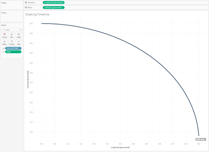
By changing the signs in front of each part of the calculation we alter the orientation. Because we want to flip it against both axes, so we add a – sign in front of both elements.
MAKEPOINT( -[Radius]*SIN(RADIANS([Degree point])) , -[Radius]*COS(RADIANS([Degree point])) )
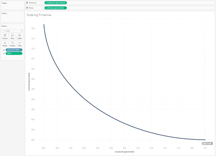
We now need to replicate this for the remaining months. This will involve changing the signs on the equations for each month, and shifting the curve horizontally and vertically according to our earlier sketch. I added an additional shift to create a small gap between each month, but this is not essential. The final calculation for this is below. This takes some tweaking to get right, but there are only so many iterations that you can do. Keep your sketch handy, and approach it one month at a time.
CASE MONTH([Date])
WHEN 1 THEN MAKEPOINT( -[Radius]*SIN(RADIANS([Degree point])) , -[Radius]*COS(RADIANS([Degree point])))
WHEN 2 THEN MAKEPOINT( -[Radius]*COS(RADIANS([Degree point])) , 0.1*[Radius] +[Radius]*SIN(RADIANS([Degree point])))
WHEN 3 THEN MAKEPOINT( 0.1*[Radius] +[Radius]*SIN(RADIANS([Degree point])) , 2.1*[Radius] -[Radius]*COS(RADIANS([Degree point])))
WHEN 4 THEN MAKEPOINT( 0.1*[Radius] +[Radius]*COS(RADIANS([Degree point])) , 2.2*[Radius] +[Radius]*SIN(RADIANS([Degree point])))
WHEN 5 THEN MAKEPOINT( 0.0*[Radius] -[Radius]*SIN(RADIANS([Degree point])) , 2.2*[Radius] +[Radius]*COS(RADIANS([Degree point])))
WHEN 6 THEN MAKEPOINT( -2.0*[Radius] +[Radius]*COS(RADIANS([Degree point])) , 2.1*[Radius] -[Radius]*SIN(RADIANS([Degree point])))
WHEN 7 THEN MAKEPOINT( -2.1*[Radius] -[Radius]*SIN(RADIANS([Degree point])) , 2.1*[Radius] -[Radius]*COS(RADIANS([Degree point])))
WHEN 8 THEN MAKEPOINT( -2.1*[Radius] -[Radius]*COS(RADIANS([Degree point])) , 2.2*[Radius] +[Radius]*SIN(RADIANS([Degree point])))
WHEN 9 THEN MAKEPOINT( -2.0*[Radius] +[Radius]*SIN(RADIANS([Degree point])) , 4.2*[Radius] -[Radius]*COS(RADIANS([Degree point])))
WHEN 10 THEN MAKEPOINT( -2.0*[Radius] +[Radius]*COS(RADIANS([Degree point])) , 4.3*[Radius] +[Radius]*SIN(RADIANS([Degree point])))
WHEN 11 THEN MAKEPOINT( -2.1*[Radius] -[Radius]*SIN(RADIANS([Degree point])) , 6.3*[Radius] -[Radius]*COS(RADIANS([Degree point])))
WHEN 12 THEN MAKEPOINT( -4.1*[Radius] +[Radius]*COS(RADIANS([Degree point])) , 6.4*[Radius] +[Radius]*SIN(RADIANS([Degree point])))
END
Add Date at the month level to detail to separate the segments of the line so that each month can be seen clearly. Your canvas should now look something like this:
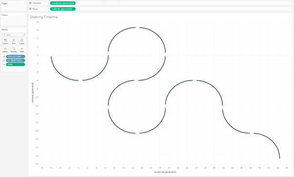
Plotting the Points
Now that we have the underlying curve, we can add the data points for this line. In this case, I’m using my record of vizzes published and want a dot to appear on each day that I published a viz to Tableau Public. For this I utilised Tableau’s Map Layers feature which means we can keep adding as many levels to this as we need. Turning the map back on, I drag the calculation we used before onto the Add a Marks Layer in the top left of the canvas. We can then turn the background map off permanently as this Add a Marks Layer option will now always be available.
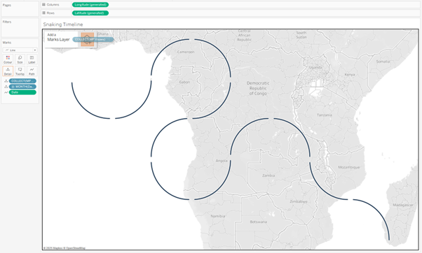
On this new layer, change the mark type to a Shape and add the Date field to detail. I created a binary marker to show when a visualisation had been published, and added this to size. This allows you to hide the days that aren’t relevant, leaving you with dots highlighting the information you are displaying.
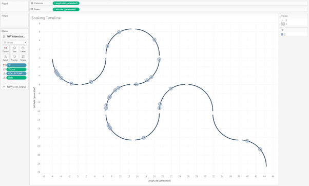
Adding Other Lines
In my visualisation I had three of these lines running parallel to each other. There is no limit to this, but be aware that the more you add the higher your Radius value will need to be. We can copy our MakePoint calculation and edit the radius part to either add or minus depending on whether that portion of the curve should be on the inside or outside of our original line. Here is an example:
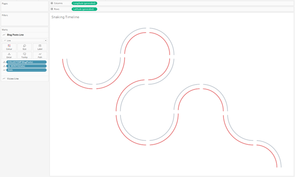
The calculation for this is:
CASE MONTH([Date])
WHEN 1 THEN MAKEPOINT( -([Radius]+1)*SIN(RADIANS([Degree point])) , -([Radius]+1)*COS(RADIANS([Degree point])))
WHEN 2 THEN MAKEPOINT( -([Radius]+1)*COS(RADIANS([Degree point])) , 0.1*[Radius] +([Radius]+1)*SIN(RADIANS([Degree point])))
WHEN 3 THEN MAKEPOINT( 0.1*[Radius] +([Radius]-1)*SIN(RADIANS([Degree point])) , 2.1*[Radius] -([Radius]-1)*COS(RADIANS([Degree point])))
WHEN 4 THEN MAKEPOINT( 0.1*[Radius] +([Radius]-1)*COS(RADIANS([Degree point])) , 2.2*[Radius] +([Radius]-1)*SIN(RADIANS([Degree point])))
WHEN 5 THEN MAKEPOINT( 0.0*[Radius] -([Radius]-1)*SIN(RADIANS([Degree point])) , 2.2*[Radius] +([Radius]-1)*COS(RADIANS([Degree point])))
WHEN 6 THEN MAKEPOINT( -2.0*[Radius] +([Radius]+1)*COS(RADIANS([Degree point])) , 2.1*[Radius] -([Radius]+1)*SIN(RADIANS([Degree point])))
WHEN 7 THEN MAKEPOINT( -2.1*[Radius] -([Radius]+1)*SIN(RADIANS([Degree point])) , 2.1*[Radius] -([Radius]+1)*COS(RADIANS([Degree point])))
WHEN 8 THEN MAKEPOINT( -2.1*[Radius] -([Radius]+1)*COS(RADIANS([Degree point])) , 2.2*[Radius] +([Radius]+1)*SIN(RADIANS([Degree point])))
WHEN 9 THEN MAKEPOINT( -2.0*[Radius] +([Radius]-1)*SIN(RADIANS([Degree point])) , 4.2*[Radius] -([Radius]-1)*COS(RADIANS([Degree point])))
WHEN 10 THEN MAKEPOINT( -2.0*[Radius] +([Radius]-1)*COS(RADIANS([Degree point])) , 4.3*[Radius] +([Radius]-1)*SIN(RADIANS([Degree point])))
WHEN 11 THEN MAKEPOINT( -2.1*[Radius] -([Radius]+1)*SIN(RADIANS([Degree point])) , 6.3*[Radius] -([Radius]+1)*COS(RADIANS([Degree point])))
WHEN 12 THEN MAKEPOINT( -4.1*[Radius] +([Radius]-1)*COS(RADIANS([Degree point])) , 6.4*[Radius] +([Radius]-1)*SIN(RADIANS([Degree point])))
END
Notice how for January and February we want the new line (shown in red) to be on the outside of the original curve, but for March we want it to be on the inside. I have simply changed the sign on the Radius multiplier in each case to reflect this.
Once you have understood this, you can add as many of these layers as you wish.
Encoding my Location
The next step of what I did was to add lines for each day to show where I was at the time. I could have done this as another curvy line, but I thought that changing how this one was displayed would be more effective and give some freshness to how the design of the viz.
The basis of this is very similar to the previous steps. You need to create a series of points (coordinates) so that your lines can span from the outside to the inside of all the curvy lines you have drawn. This is where our densification part of the data source comes in. While our calculation stays largely the same as in the previous steps, we need to duplicate it so that it includes both the inside and outside within the same calculation. You should have something that looks like this:
IF [T] = 1 THEN
STANDARD MAKEPOINT CALCULATION FROM BEFORE WITH A SUITABLE RADIUS
ELSEIF [T] = 2 THEN
STANDARD MAKEPOINT CALCULATION FROM BEFORE WITH A SUITABLE RADIUS
END
It is important in this that your radius is different in both of these cases so that you span across all the lines that you drew. I used 2 and -2, ensuring that the signs made sense for the direction of the curve.
Bring this new field in as new Mark Layer, and change the mark type to Line. This time we want to add T to Path so that each date will have it’s own line going from the coordinate relating to [T] = 1 to the coordinate relating to [T] = 2. Also add Date to detail, and any field that you would like to colour the information by (I’m using Location).
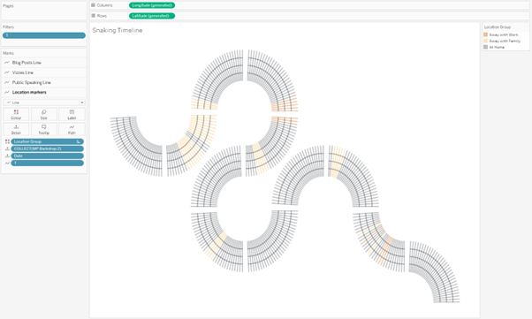
//
Once you have all of these components, you should be able to add your sheet to a dashboard and go nuts with formatting until you have the output that you desire.
I think the hardest part of this is making the direction of the curves work the way you want it to. It takes some time to get it right, but be patient and you will get there just fine! If you do get stuck and need a helping hand, I’m always happy to answer any questions.
I would love to see anything that you create using this technique. Be sure to tag me in anything you share on social media.
Take care // Chris